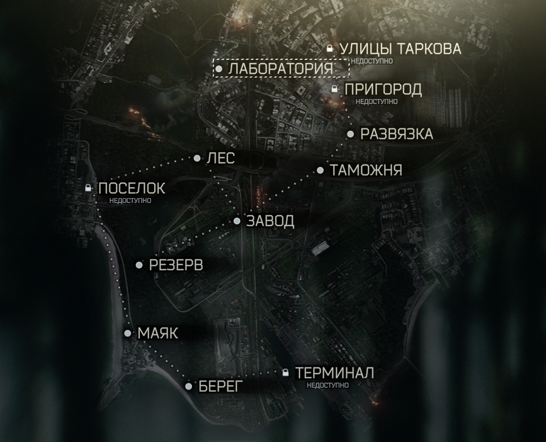

В Таркове существует 8 различных карт.
Все они представляют собой открытую местность, за исключением карт Завод и Лаборатория.

Обитает на карте Развязка.
Является одним из самых сложных боссов. Одет в очень тяжелую броню, носит РПК-16 на бронебойных патронах.
Предпочитает сидеть в темных углах торгового центра, выслеживая свою добычу, а затем испепеляя её.
Большой участок околозаводской территории, включающий в себя таможенный терминал, общежитие, мазутное хозяйство и прочие объекты инфраструктуры.
Локация отлично подойдет как для новичков, так и для профи.
Присутствует пересеченная местность, заводская зона и небольшой спальный район, где обитает босс Решала.
Южная транспортная развязка является ключевым звеном в магистральной системе города.
Это стратегический узел, связывающий портовую инфраструктуру с пригородом города Таркова.
На территории находится крупный торговый центр Ультра, который использовался МЧС, как основная база эвакуации.
Приозерская заповедная зона была недавно включена в список охраняемых заповедников Северо-Западного региона.
В центре локации ЛЕс расположена лесопилка, где обитает босс Штурман.
На данной локации широко популярен снайпинг, так как карта представляет собой большую лесную зону.
Секретная база РосРезерва по легендам содержащая в себе многолетний запас провизии, медикаментов и ресурсов на случай тотальной ядерной войны.
Большая карта, которая представляет собой военную базу, с многочисленными бункерами и корпусами.
Осторожно! На базе орудует банда Глухаря.
Маяк на мысе Дальнем являлся важным стратегическим объектом города.
В начале конфликта он использовался USEC как точка высадки, тем самым привлек отряды BEAR, призванных свести присутствие ЧВК противника на ноль.
На карте присутствуют вражеские боты "отступники" это бывшие ЧВК USEC которые заняли и создали блокпост.
Территория и производственные помещения химического комбината №16 были незаконно сданы компании Terra Group.
В период Контрактных Войн здесь проходили бои между подразделениями USEC и BEAR, определяющие контроль за заводским районом города Таркова.
В дальнейшем с началом хаоса территория комбината стала использоваться как убежище гражданского населения.
Подземный лабораторный комплекс Terra Group Labs это засекреченный объект под самым центром Таркова.
Официально этот научно-исследовательский центр нигде не фигурирует и, по обрывочным данным, занимается изучением, тестированием и моделированием в областях химии, физики, биологии и высоких технологий.
Для входа на данную локацию необходимо иметь специальный одноразовый ключ доступа.